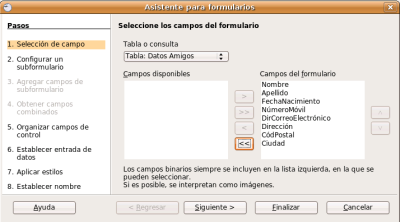
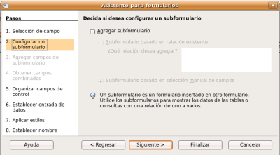
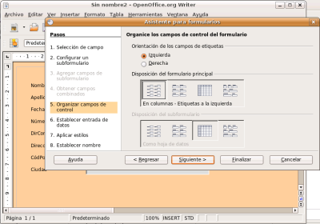
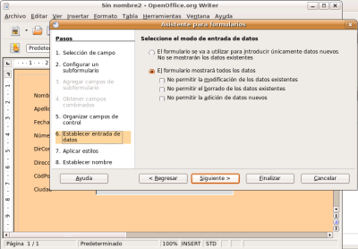
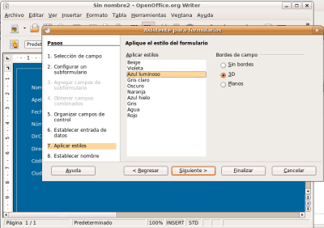
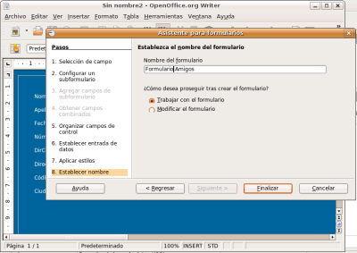
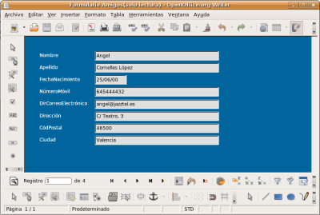

En esta práctica vamos a crear un formulario utilizando el asistente.
Nos basaremos en la tabla Datos Amigos de la Base de Datos Amigos.
Paso 1: Abrimos la base de datos y dentro de Formularios elegimos la opción Usar el asistente ...
Paso 2: Nos aparecerá una ventana en donde elegiremos la tabla o consulta de la cual queremos realizar el Formulario y tenemos que pasar todos los campos a la columna de la derech, como se muestra en la siguiente figura.

Paso 3: Tras pulsar el botón Siguiente, obtendremos una ventana en donde nos pregunta si queremos añadir un subformulario (ver imagen). Los subformularios los podemos utilizar para mostrar los datos de
tablas o consultas con una relación de uno a varios. Así, por ejemplo,
podemos mostrar un departamento en el formulario principal y en el
subformulario los trabajadores que pertenecen a dicho departamento.En este paso no hacemos nada y pulsamos el botón Siguiente.

Paso 4: Ahora el asistente nospregunta como queremos organizar los campo (ver figura). Elegimos las opciones de la figura y pulsamos el botón Siguiente.

Paso 5: Seleccionamos el modo de entrada de datos como en la figura y pulsamos el botón Siguiente.

Si deseamos utilizar el formulario únicamente para rellenar los datos de una o más tablas marcaremos la primera opción: El formulario se va a utilizar para introducir únicamente datos nuevos. No se mostrarán los datos existentes.
De este modo el formulario nos mostrará los campos vacíos y en ellos
sólo podremos introducir nuevos datos. No podremos ni editar, ni
modificar, ni siquiera ver los datos que ya están dentro de la tabla o
tablas.
Si deseamos que el formulario nos permita también
ver los datos de la tabla o tablas con las que trabaja debemos marcar
la segunda opción: El formulario mostrará todos los datos. Al seleccionar esta opción también podemos indicar todo lo que se podrá hacer con los datos que se muestran:
- No permitir la modificación de los datos existentes: los datos se muestran en el formulario, pero no podemos modificar el contenido de ninguno de sus campos.
- No permitir el borrado de los datos existentes: no permite que borremos ninguno de los campos.
- No permitir la adición de datos nuevos: si seleccionamos esta casilla no podremos introducir nuevos datos en la tabla o tablas a través del formulario.
Paso 6: Aplicamos el estilo deseado al formulario y pulsamos el botón Siguiente.

Paso 7: Introducimos el nombre del formulario y pulsamos Finalizar.

Paso 8: En la siguiente figura se muestra el formulario obtenido:
